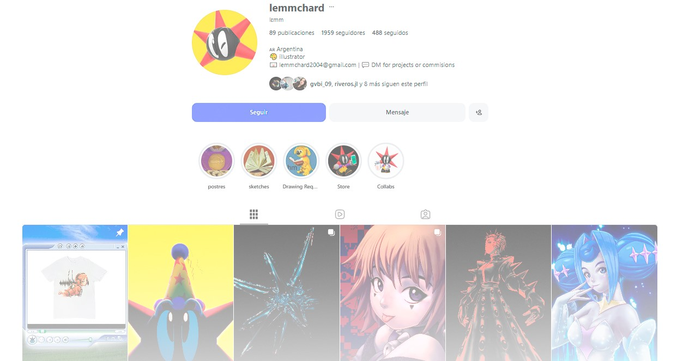


Mi trabajo actual en la ilustración se vuelca hacia una estética anime moderna, muy influenciado por el arte de Range Murata y Shinkiro.
De estos dos grandes ilustradores japoneses rescato ese estilo en común que tanto me gusta: la fusión entre la nostalgia vintage y el diseño futurista, plasmado a través de una precisión técnica impecable y un sentido de la moda muy marcado en cada personaje.
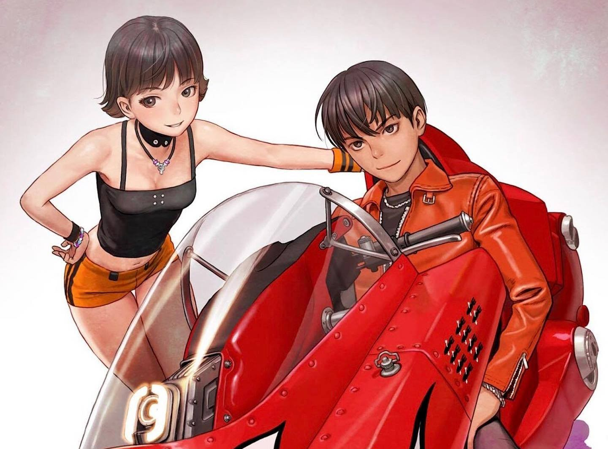
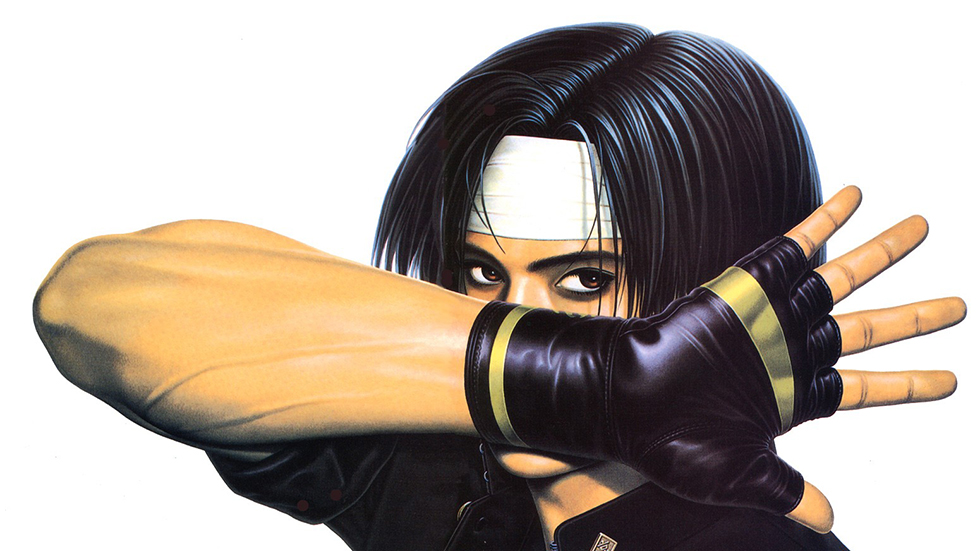
Justice es un dúo francés de música electrónica que me encanta por su forma única de fusionar la electrónica con el rock, dos de mis géneros favoritos.
Visualmente me fascina su icónica cruz, un emblema que define toda su estética. Su música es una gran fuente de inspiración para mí; muchas veces, escuchar sus canciones es el detonante que necesito para idear nuevas ilustraciones o conceptos.
Mi fanatismo por ellos es un poco mas grande, ya que tengo varios de sus álbumes en vinilo y tuve la increíble oportunidad de verlos tocar en vivo en el Movistar Arena.
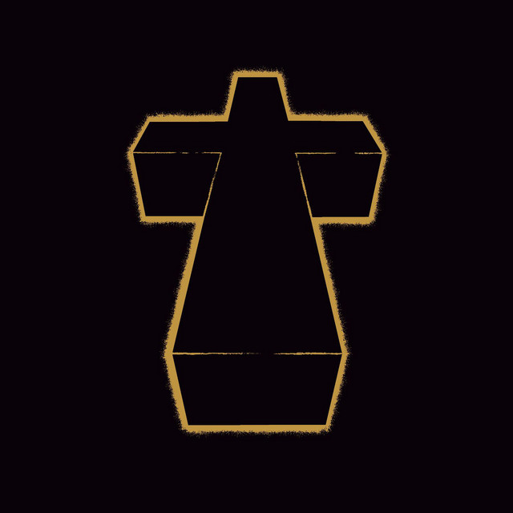
Suelo ser una persona bastante tranquila, incluso en momentos de frustración o confrontación. En el pasado era todo lo contrario:
De más joven era bastante impulsivo y escandaloso, pero con el tiempo fui cambiando, algo que considero parte normal del crecimiento. Donde más noté esa transformación fue durante la cuarentena; pasé mucho tiempo reflexionando sobre cómo sobrellevar las experiencias del pasado y siento que durante ese encierro me volvió más callado y reservado, llegando incluso a tocar de cerca la depresión o la ansiedad.
Sin embargo, hoy sigo aqui mejorando, y de haber atravesado eso no significa que sea antisocial; hoy valoro mucho más los vínculos, me gusta relacionarme con la gente y, si hay espacio para una buena charla, cuenten conmigo!

Además del dibujo y el arte digital, tambien desarrolle un cariño por la repostería. Cuando tengo tiempo o me llega la inspiración, disfruto mucho preparando cosas como medialunas, crumble de manzana o cheesecake, etc.
Toda esta influencia viene de mi madre, que se dedica a la repostería; crecí pasando mi niñez viéndola practicar y sorprender con cada receta nueva, lo que mas tarde encendió mi propio gusto por la cocina, aunque aun me queda practicar.
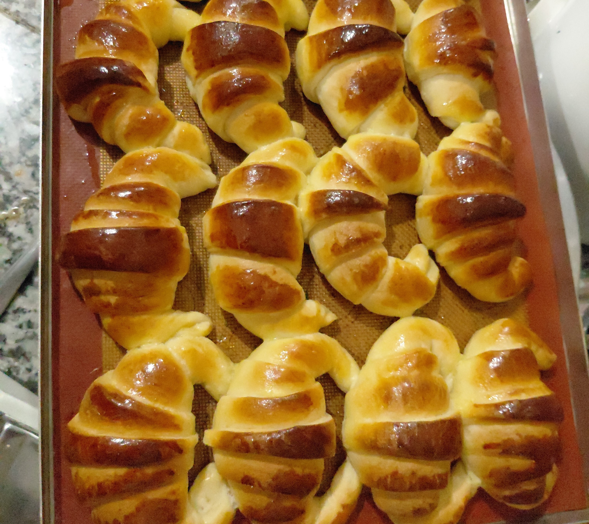
Prácticamente llevo toda mi vida dibujando, empecé a los 5 años, influenciado por los videojuegos, las series y sus personajes.
Sin embargo, el momento en que comencé a tomarme esta disciplina en serio fue en 2020, cuando di el salto del papel a mi primera tableta digital gracias al apoyo de mis padres. Desde entonces, pasé casi seis años trabajando en definir mi identidad visual, atravesando varios cambios notables que me llevó a explorar estilos como el cartoon, el realismo y el anime.
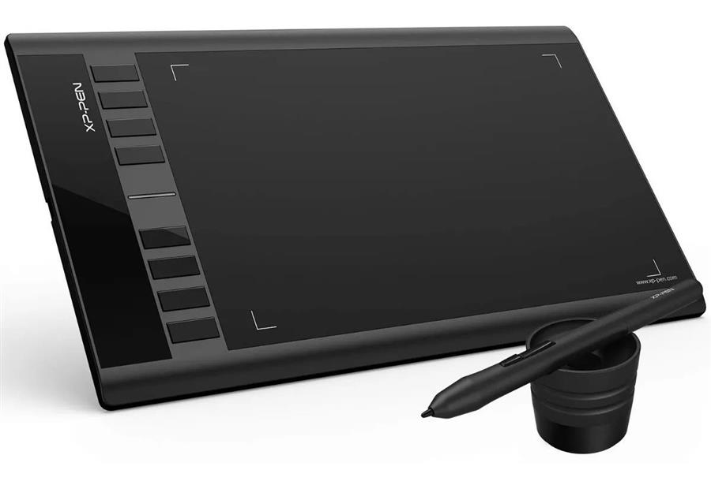
Actualmente estoy cursando la "Licenciatura en Artes Digitales" en la UNQ. Al elegir esta carrera, mi meta no era solo mejorar en el aspecto práctico, sino también entender su trasfondo teórico.
Definir el arte es complejo porque abarca demasiadas realidades, y estoy convencido de que aprender sobre las raíces de esta disciplina nos da una estructura y una sensibilidad mucho mayor para interpretar y plasmar el mundo que nos rodea.

Mi infancia estuvo marcada por los videojuegos: arcades, puzles, plataformas y los primeros entornos en 3D moldearon mi imaginación.
Esa cultura visual fue clave cuando empecé a desarrollar mi faceta cartoon, tomando como gran referente el diseño de personajes de Nintendo (sobre todo de franquicias como Mario Bros. o Zelda). Esas formas y colores fueron como un catalizador para animarme a diseñar mis propios personajes.
Al día de hoy, mantengo vivo ese amor por el gaming jugando en mis consolas retro, como la SNES y la Wii.
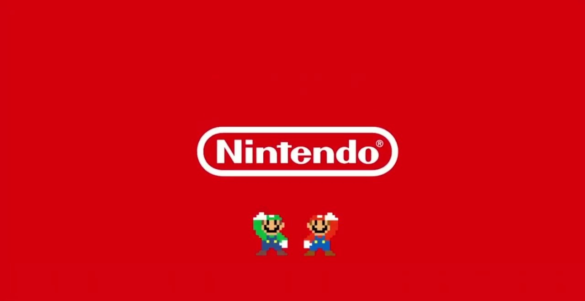
En ese punto, cuando recién empezaba con el cartoon, sentí la necesidad de moldear y evolucionar mi estilo de alguna forma. Fue entonces cuando me sumergí en la era dorada de la animación de Disney, desde los cortos clásicos de "Mickey Mouse" hasta la herencia de ese trazo en películas como "Tarzan" o "La princesa y el sapo". Ese estilo tan característico, suave y artesanal, me atrapó por completo y me impulsó a volcarme de lleno a practicarlo durante un buen tiempo.

Mi estilo más reciente comenzo influenciado por el anime de los 2000, una de las épocas más ricas y experimentales de la animación japonesa, que funcionó como el puente perfecto entre la crudeza artesanal de los 90 y la pulcritud digital actual.
No diría que soy un experto en todos los títulos que se lanzaron en esa década, pero esta estética se convirtió en mi último gran referente. De hecho, este camino empezó gracias a una colaboración con una amiga artista a la que aprecio mucho; ver sus personajes con esa vibrante estética retro y esos rasgos de anime me atrapó por completo y me impulsó a investigar más sobre esa época y a adoptar esa rica estética visual en mis propias ilustraciones.
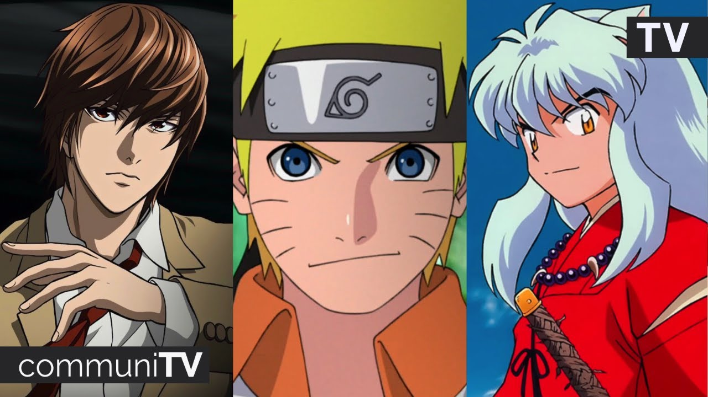
Durante un tiempo corto subía reels a Instagram; hoy ya no lo hago tanto, aunque si surge algún chiste o tendencia divertida, me prendo a armar algo.
Me gusta editar, es un oficio que vengo metiendo hace tiempo junto a las filmaciones que hago con mi papá. Sin embargo, más allá de registrar eventos, lo que realmente me atrapó fue la fotografía, algo a lo que le di mucha más importancia desde que entré a la universidad. Me encanta salir a sacar fotos, ya sea con el celular o con la cámara; es mi forma de desconectarme de la rutina digital y tener mi espacio de relajación.
Aunque a veces admito que lo hago de manera automática, es decir, cuando veo algo que me llama la atención siento la necesidad de capturarlo.
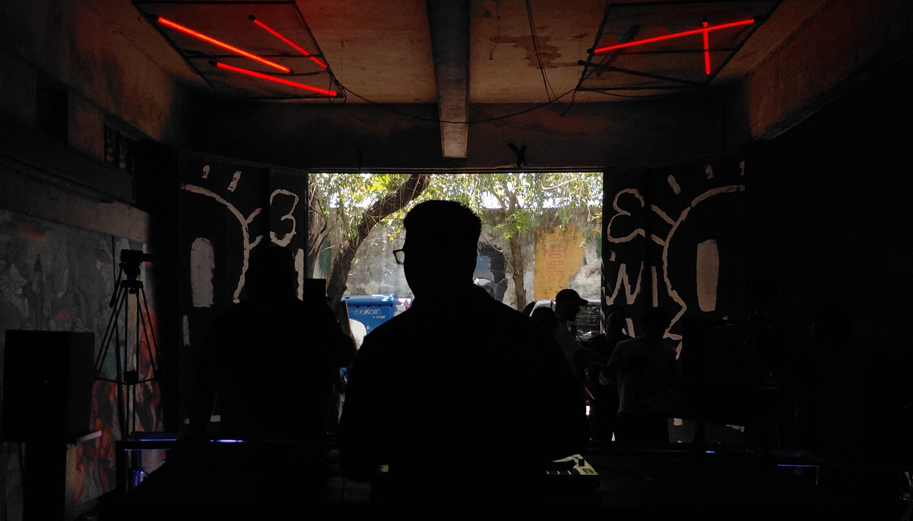
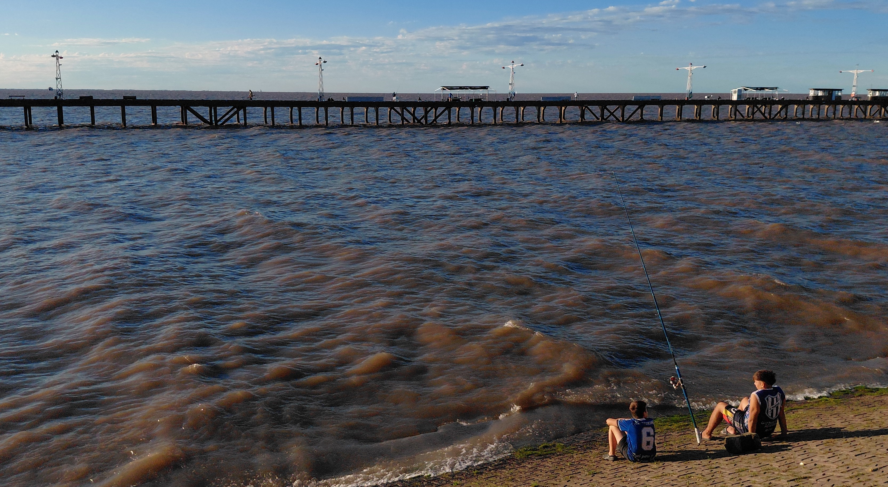
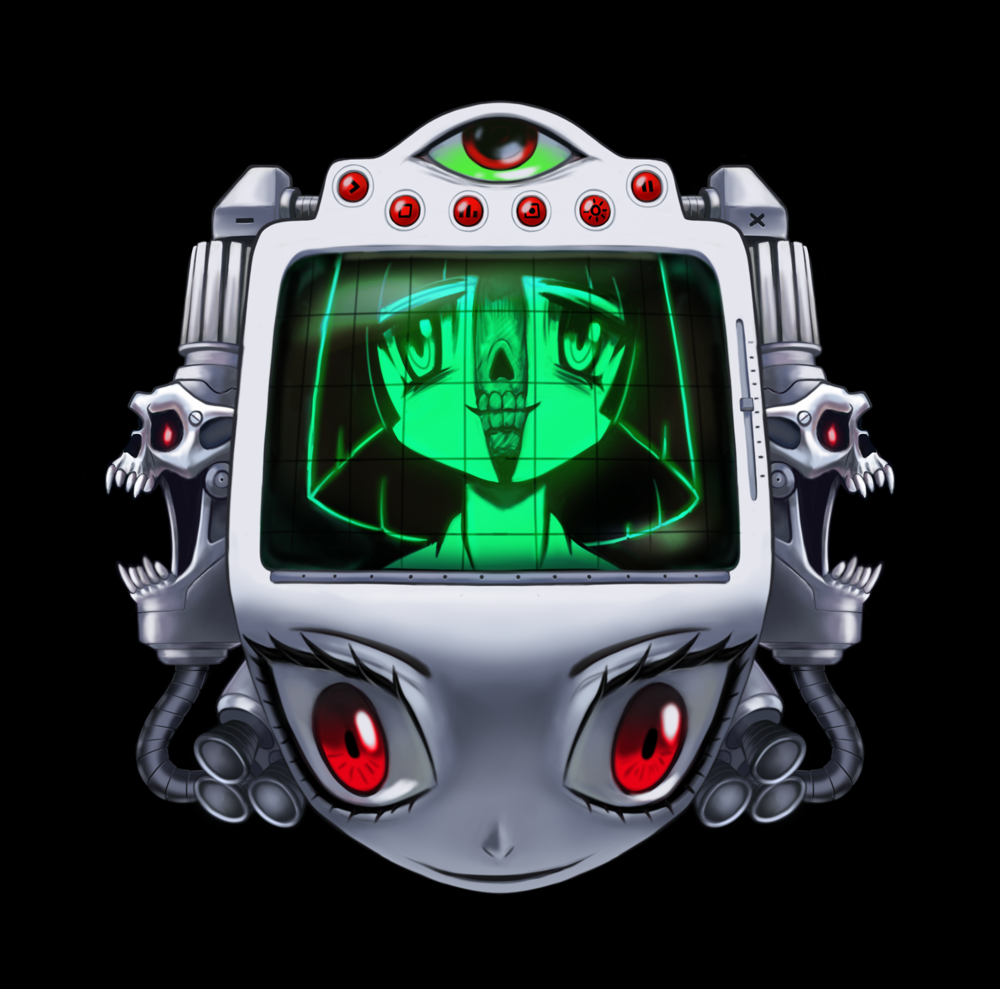
Les gusta a 220 personas
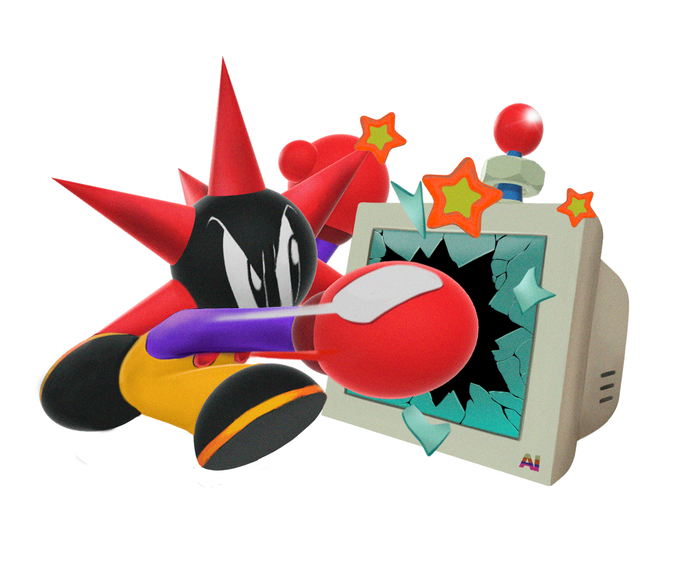
Les gusta a 76 personas
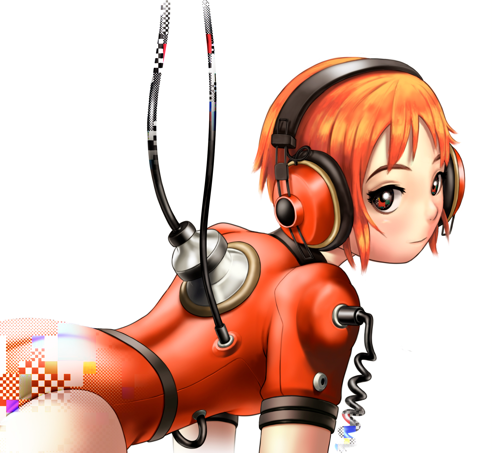
Les gusta a 73 personas
Una etapa muy marcada por estéticas y diseños que consumía en esa época.
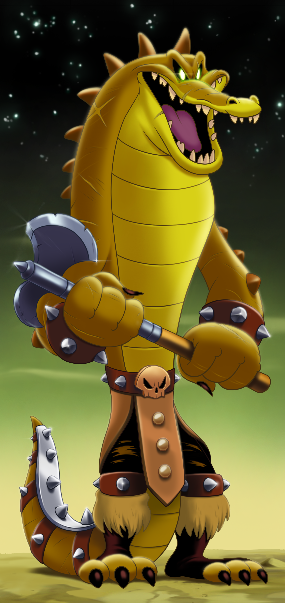
Les gusta a 176 personas
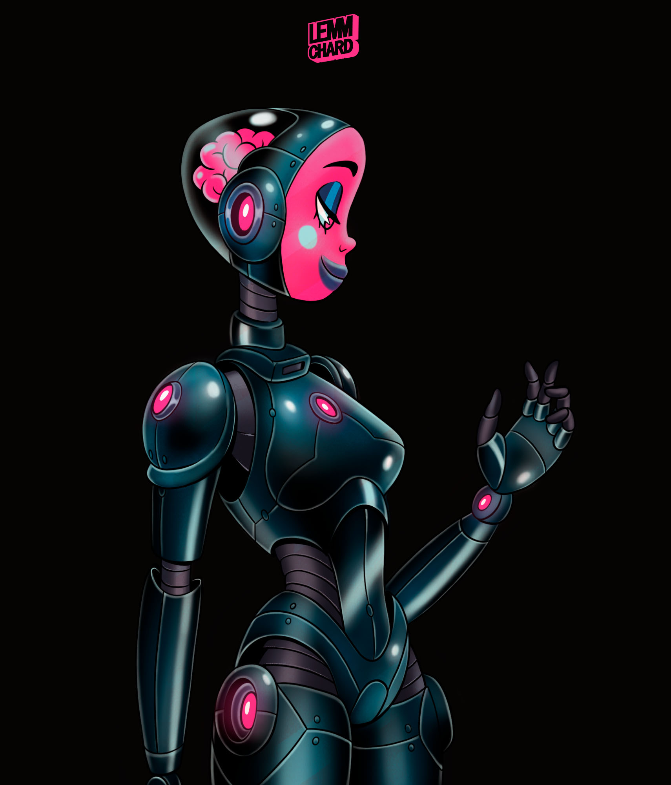
Les gusta a 92 personas
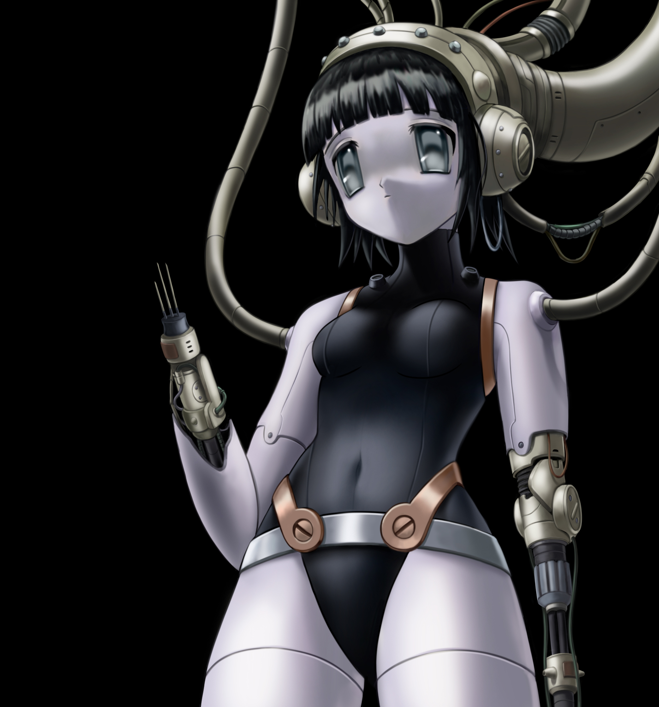
Les gusta a 300 personas

Les gusta a 212 personas

Les gusta a 150 personas